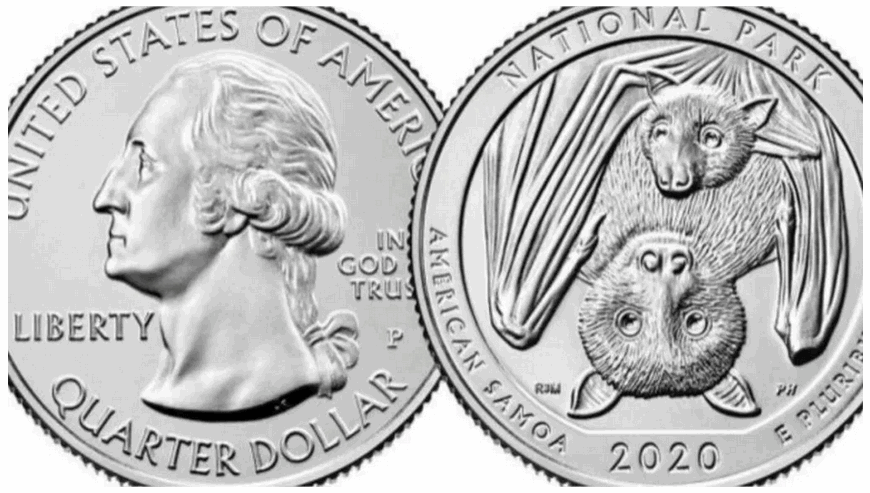
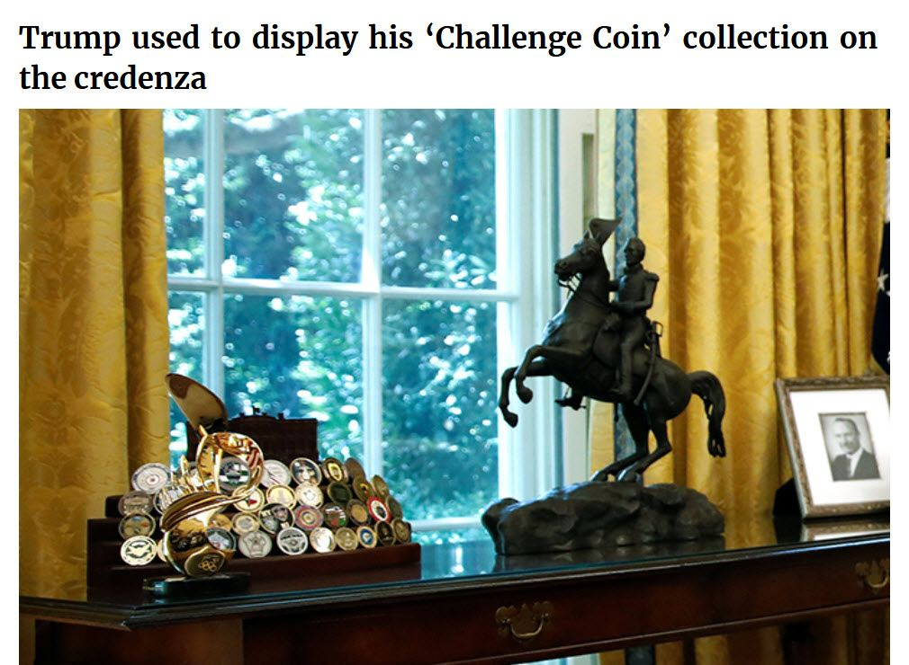
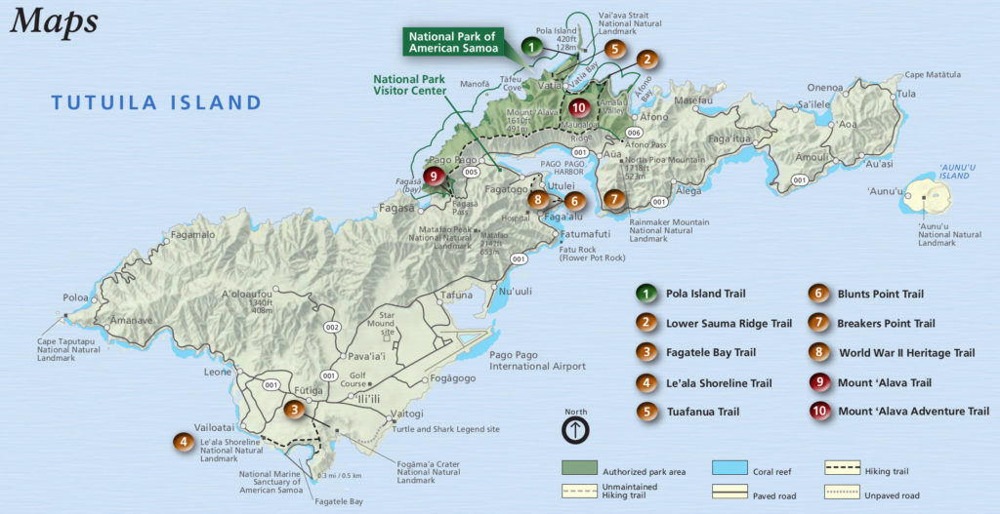

As I have mentioned before, we only see the tip of the iceberg in our day to day lives. This leads to some odd and strange phenomena. Nothing is more poignant than when it is associated with a global situation or catastrophe. As is the case with the COVID-19, coronavirus. And thus we have this curiosity…
Here we have a new American coin.
It was designed and developed years back and just hit the “streets” in February 2020. Just about the same time when the COVID-19 is starting to assault the American population. Check out the design.
Notice anything interesting?

On February 13, 2020, the U.S. Mint released a quarter honoring the National Park of American Samoa in Utulei, American Samoa. The quarter is the first release of 2020 and the 51st release of the America the Beautiful Quarters® Program.
Keep in mind that the mainstream American media narrative is that the COVID-19 virus came into being by Chinese slurping bat soup. Bat soup made from “rare” (in China) South Pacific bats…
Imagine that!
Conspiracy Considerations
What better way to keep Americans thinking about “bat slurping” Chinese than to have them confront that idea every time they pay in cash?
It’s like the Will Smith movie “Focus”…
Nicky and Jess go to the football game. They make small bets with each other such as if one fan will catch a hot dog, and if another is too drunk to get up for the wave. They see a woman in short shorts and bet how many men will look at her ass as she walks by. Jess bets 8 while Nicky bets 3. A curious man named Mr. Liuyan (B.D. Wong) joins the game and bets 5. Seven men check out the woman as she walks by, making Jess the closest. Liuyan makes more bets with Nicky over the game, practically begging him to play when Nicky tries to back out. Nicky plays and loses $1,000. The bets escalate as the two men double the bets, even as Jess tells Nicky they should just leave. After losing $100,000, it looks like Nicky has finally had enough and is about to walk away. Mr. Liuyan goads him back in, and Nicky bets all the remaining cash ($1.1 million) on a simple high card draw. Liuyan pulls the card with a higher number, winning all their money. Nicky and Jess are heartbroken. Nicky chooses not to walk away and decides to double the bet again. He tells Liuyan to pick any player on the field, and he will guess which one, seemingly impossible odds. Mr. Liuyan thinks he is crazy and doesn't bet on crazy, so he refuses. Nicky sweetens it when he says Jess will pick the player that Liuyan spotted, much to Jess's terror. Liuyan can't turn down free money, so he picks a player. As Jess nervously looks through the binoculars, Liuyan gives them a chance to back out. Jess looks to Nicky, seemingly begging him to take this chance to back out, but Nicky tells her to pick. Jess again nervously scans the players. All of a sudden, she spots Farhad wearing a jersey with 55 on it. She grins and picks him, and to everyone's surprise, that's the correct answer. On the taxi ride home, Nicky, now with a LOT of money on him, explains to Jess that this was set up from the beginning of the day. He knew that Liyuan is a notorious gambler, so he had it set up so that Liuyan would see the number 55 throughout the day, thereby subconsciously getting him to pick that number when the moment was right. -Focus
Another Coincidence
Airport worker said the vehicle has been left in the staff car park since before Australia’s coronavirus lockdowns began.
The disease caused by coronavirus was first officially labelled “COVID–19” on February 11, and was declared a pandemic one month later.
Mr Spry said as far as colleagues could recall, the car had been there since “February or even earlier”, and was definitely there from mid-March when most airport staff went on four weeks of forced leave.
Remember the time to have a custom license plate made in Australia is typically six months.
Did you know that Donald Trump collects a coin of every “battle campaign” that he has ever fought?
It’s true. And if you look carefully, you will certainly see that new US Nickel in his display. Check out the picture…

Commentary
What can I say?
Just a coincidence, eh?
People! Listen up. NOTHING in this universe is a coincidence.
As an aside, I have visited this park. It is beautiful. I used to live in Tafuna. And my work project was in Pago Pago, which was not too far from the park.

The only thing about it is the holes in the road going up and down the mountain. The locals have placed large stones near each pot-hole so that people can avoid hitting the bumps. Though, aside from that, it’s a truly beautiful place. It’s towards the North side of the island, and very picturesque. It’s worth a visit next time you are in the South pacific.
Oh, and those fruit bats are noisy. When they fight it sounds like a cross between a cat fight and a car wreck.
Anyways, not bad mouthing American Samoa, but all things considered it’s pretty strange. Yes, all in all, it’s pretty strange. With a bat coin developed that would enter America just when the COVID-19 was hitting the United States.
It’s a curiosity. Don’t you think?
Especially when the “go ahead” to make this coin corresponds with the restructuring of the American bio-weapons office under John Bolton in 2017. Curious.
Have a nice day.
I hope that you enjoyed this little post. I really don’t know where to put it, so I am just putting it everywhere. LOL. Check out my main index here…
Articles & Links
You’ll not find any big banners or popups here talking about cookies and privacy notices. There are no ads on this site (aside from the hosting ads – a necessary evil). Functionally and fundamentally, I just don’t make money off of this blog. It is NOT monetized. Finally, I don’t track you because I just don’t care to.
To go to the MAIN Index;
- You can start reading the articles by going HERE.
- You can visit the Index Page HERE to explore by article subject.
- You can also ask the author some questions. You can go HERE .
- You can find out more about the author HERE.
- If you have concerns or complaints, you can go HERE.
- If you want to make a donation, you can go HERE.
Please kindly help me out in this effort. There is a lot of effort that goes into this disclosure. I could use all the financial support that anyone could provide. Thank you very much.
[wp_paypal_payment]